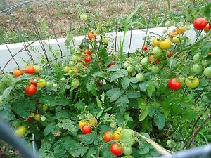

About Us
Welcome to the garden club! Here at the garden club, we have everything you need to know about gardens. We have the latest tips and tricks to tutorials on how to keep those gardens looking great. With our recent opening, we are new to this too! Don't worry about experience; we're all in this together. We're here to show the people what gardening is all about!
Are you new to gardening? Have you been interested in testing out your green thumb, but don't know where to start? Gardening Club is the solution that you've been waiting for! Beginners and experts are welcome.
Here are some of the Gardens we have:

Our gardens are beautiful and we can help you turn your not-so-good garden into something you can be proud of! On our website, we have loads of tips and tricks, as well as a tool list for beginners.
Don't be shy, let's garden!